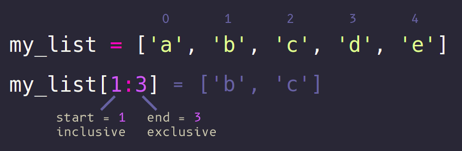

Basics
- An ordered collection of values
- Index count starts from 0
- Mutable: Elements can be changed
- Allows duplicate elements
numbers = [1, 2, 3]
letters = ['f', 'o', 'o', 'd']
Creating lists
# Method #1:
my_list = list()
# Method #2:
my_list = []
print(my_list) # []
my_list = ['orange', 'apple', 'plum', 'banana']
print(my_list) # ['orange', 'apple', 'plum', 'banana']
num_list = [5, 8, 23, 0]
print(num_list) # [5, 8, 23, 0]
Retrieving elements by index
my_list = ['orange', 'apple', 'plum', 'banana']
my_list[0] # 'orange'
my_list[3] # 'banana'
- Accessing wrong index (leads to an error):
my_list[8] # IndexError: list index out of range
Adding items to a list
- Appending values (adds to the end of the list):
my_list = ['plum']
my_list.append('apple')
print(my_list) # ['plum', 'apple']
my_list.append('orange')
print(my_list) # ['plum', 'apple', 'orange']
- Adding an element on a specific index:
my_list.insert(1, 'melon')
print(my_list) # ['apple', 'melon', 'orange']
Changing items in a list
my_list = ['orange', 'apple', 'plum', 'banana']
my_list[1] = 'lemon'
print(my_list) # ['orange', 'lemon', 'plum', 'banana']
Deleting items from a list
my_list = ['orange', 'apple', 'plum', 'melon', 'banana']
del my_list[0]
print(my_list) # ['apple', 'plum', 'melon', 'banana']
- Deleting an item by value:
my_list.remove('plum')
print(my_list) # ['apple', 'melon', 'banana']
Deleting items from a list #2
- Another handy method is .pop()
- Removes an element from the list
- Returns the value of the removed element
my_list = ['orange', 'apple', 'plum', 'melon', 'banana']
banana = my_list.pop()
print(banana) # 'banana'
print(my_list) # ['orange', 'apple', 'plum', 'melon']
- By default, removes the element from the end of the list
- Index can be specified for an item to be popped
my_list.pop(0) # 'orange'
print(my_list) # ['apple', 'plum', 'melon']
Extending lists
- The .extend() method adds all the elements of an iterable to the end of the list:
my_list = [1, 2, 3]
my_list2 = [4, 5, 6]
my_list.extend(my_list2)
print(my_list) # [1, 2, 3, 4, 5, 6]
print(len(my_list)) # 6
Joining lists
- Lists can be joined by using the addition (+) operator:
my_list = [1, 2, 3]
my_list2 = [4, 5, 6]
long_list = my_list + my_list2
print(long_list) # [1, 2, 3, 4, 5, 6]
Multiplication:
- List items can be multiplied by the ' * ' operator:
my_list = ['a'] * 7
print(my_list) # ['a', 'a', 'a', 'a', 'a', 'a', 'a']
my_list2 = ['foo', 'bar'] * 2
print(my_list2) # ['foo', 'bar', 'foo', 'bar']
In-place list operations
- The .reverse() method changes a list in-place:
my_list = ['orange', 'apple', 'plum']
my_list.reverse()
print(my_list) # ['plum', 'apple', 'orange']
- The .sort() method sorts elements in-place:
my_list = ['orange', 'apple', 'plum']
my_list.sort()
print(my_list) # ['apple', 'orange', 'plum']
my_list.sort(reverse=True)
print(my_list) # ['plum', 'orange', 'apple']
What is slicing?
Slicing is a feature that extracts sub-sets out of lists, tuples and arrays
Syntax
my_list[start:end:step]
- start - The index from which the sub-list starts (inclusive)
- end - The index at which the sub-list ends (exclusive)
- step - How many elements to skip
Examples
my_list = ['a', 'b', 'c', 'd', 'e']
my_list[1:3] # ['b', 'c']
my_list[1:] # ['b', 'c', 'd', 'e']
my_list[:3] # ['a', 'b', 'c']
my_list[:] # ['a', 'b', 'c', 'd', 'e']
my_list[::2] # ['a', 'c', 'e']
Important
- The start element is inclusive, which means that it will be included in the sub-list
- The end element is exclusive, which means that it won't be included in the sub-list
- The step element equals to 1 by default and doesn't need to be written always

Negative indices
All three values in the slicing syntax may be negative
- start - Starts listing elements from the end of the list
- end - Lists elements up until the last number of elements
- step - Reverses the order of the elements in the list
Examples
my_list = ['a', 'b', 'c', 'd', 'e']
# The last element
my_list[-1] # ['e']
# The last two elements
my_list[-2:] # ['d', 'e']
# Everything except the last two elements
my_list[:-2] # ['a', 'b', 'c']
# The entire list reversed
my_list[::-1] # ['e', 'd', 'c', 'b', 'a']
Basics
- Dictionary is an unordered set of {key: value} pairs
- Keys are unique in a dictionaty
- Called 'dict' for short
- Mutable: Keys and values can change
- Indexed: Values can be addressed by using their key
nums = {
'one': 1,
'two': 2
}
Creating dictionaries
- Create an empty dictionary
# Method #1:
my_dict = dict()
print(my_dict) # {}
# Method #2:
my_dict = {}
print(my_dict) # {}
- Create a populated dictionary
my_dict = {'name': 'Johny', 'age': 20}
Retrieving elements
my_dict = {'name': 'Johny', 'age': 20}
my_dict['name'] # Johny
my_dict['age'] # 20
- Accessing nonexistent key (leads to an error):
my_dict['city'] # KeyError: 'city'
Example
sports = {
'Ralph': 'Football',
'Michael': 'Basketball',
'Shirly': 'Baseball'
}
print(sports)
# {'Ralph': 'Football', 'Michael': 'Basketball',
# 'Shirly': 'Baseball'}
print(sports['Michael']) # Basketball
Adding items to a dictionary
my_dict = {'name': 'Johny', 'age': 20}
my_dict['city'] = 'Dimona'
print(my_dict)
# {'name': 'Johny', 'age': 20, 'city': 'Dimona'}
Modifying items in a dictionary
my_dict = {'name': 'Johny', 'age': 20}
my_dict['name'] = 'Samantha'
print(my_dict)
# {'name': 'Samantha', 'age': 20}
Deleting items from a dictionary
my_dict = {'name': 'Johny', 'age': 20}
del my_dict['age']
print(my_dict)
# {'name': 'Johny'}
Join dictionaries
- The .update() method updates the dictionary with the elements from the another dictionary
my_dict = {'name': 'Johny', 'age': 20}
my_dict2 = {'city': 'Dimona'}
my_dict.update(my_dict2)
print(my_dict)
# {'name': 'Johny', 'age': 20, 'city': 'Dimona'}
- It also works with an iterable of 'key:value' pairs
my_dict = {'name': 'Johny', 'age': 20}
my_dict2 = [('city', 'Dimona')]
my_dict.update(my_dict2)
print(my_dict)
# {'name': 'Johny', 'age': 20, 'city': 'Dimona'}
Popping items
- Dictionaries also support the .pop() method
- It works by providing a key as an argument
my_dict = {'name': 'Johny', 'age': 20}
my_dict.pop('name') # Johny
print(my_dict) # {age': 20}
- Additionally, there is another method .popitem()
- It pops the last element inserted into the dictionary
my_dict = {'name': 'Johny', 'age': 20, 'city': 'Dimona'}
my_dict.popitem() # ('city', 'Dimona')
my_dict.popitem() # ('age', 20)
my_dict.popitem() # ('name', 'Johny')
- The returned (key, value) pair is a Tuple
Additional methods
- .items() returns a list of (key, value) Tuples that represent the elements in the dictionary
- .keys() returns a list of keys
- .values() returns a list of values
my_dict = {'name': 'Johny', 'age': 20, 'city': 'Dimona'}
my_dict.items() # [('name', 'Johny'), ('age', 20), ('city', 'Dimona')]
my_dict.keys() # ['name', 'age', 'city']
my_dict.values() # ['Johny', 20, 'Dimona']
- Technically all three methods return a special view object that has the list of values inside of it
Set
- An unordered collection of elemenets
- Elements are unique (no duplicates)
- Mutable: Elements can change
- Unindexed: Elements can not be accessed by an index
numbers = {1, 2, 3}
letters = {'f', 'o', 'd'}
Creating a set
my_set = set()
print(my_set) # set()
type(my_set) # <class 'set'>
my_set = {1, 2, 3}
print(my_set) # {1, 2, 3}
type(my_set) # <class 'set'>
Set Methods
s.add(elem) # Adds an element to the set
s.remove(elem) # Removes an element from the set
# .remove() will raise a KeyError if the element is not in the set
s.discard(elem) # Same as .remove() but without the error
s.difference(s2) # Elements in s but not in s2
s.union(s2) # Elements in s or s2
s.intersection(s2) # Elements in both s and s2
s.update(s2) # Updates s with s2 values
Lists, Dictionaries and references
- In Python, Lists, Tuples, Dictionaries and Sets are passed by reference to the object and not by value
- For example, when using the assignment operator (=) on a list, a reference is created to the original list
- Which means that two variables point to the same value:
l1 = [5, 25, 100, 250, 1, 8]
print(l1) # [5, 25, 100, 250, 1, 8]
l2 = l1
prtint(l2) # [5, 25, 100, 250, 1, 8]
l2.append("Hi!")
print(l1) # [5, 25, 100, 250, 1, 8, 'Hi!']
prtint(l2) # [5, 25, 100, 250, 1, 8, 'Hi!']
- l2 is not a copy of l, but a reference to the same list in python's memory
- To create a copy of the list, use the .copy() method or a slicing operator ([:])
l3 = l1.copy()
l3.append("World")
print(l3) # [5, 25, 100, 250, 1, 8, 'Hi!', 'World']
l4 = l1[:]
l4.append("World")
print(l4) # [5, 25, 100, 250, 1, 8, 'Hi!', 'World']
prtint(l1) # [5, 25, 100, 250, 1, 8, 'Hi!']
- The same principle applies to dictionaries:
d1 = dict(eat='banana', drink='water')
print(d1) # {'eat': 'banana', 'drink': 'water'}
d2 = d1
d2['brush'] = 'teeth'
print(d1)
# {'eat': 'banana', 'drink': 'water', 'brush': 'teeth'}
print(d2)
# {'eat': 'banana', 'drink': 'water', 'brush': 'teeth'}
- Dictionaries are being passed by reference and not by their raw value
- There are two ways to duplicate a dictionary
d1 = {'eat': 'banana', 'drink': 'water'}
- By creating a new dict out of an existing one:
d2 = dict(d1)
print(d2) # {'eat': 'banana', 'drink': 'water'}
- Or by using the .copy() method:
d2 = d1.copy()
print(d2) # {'eat': 'banana', 'drink': 'water'}
Sequence operations
- Check the length of lists, dictionaries, tuples and sets:
my_list = ['orange', 'apple', 'plum', 'banana']
print(len(my_list)) # 4
my_dict = {'name': 'Tux', 'animal': 'penguin'}
print(len(my_dict)) # 2
my_tuple = ('orange', 'apple')
print(len(my_tuple)) # 2
my_set = {'apple', 'banana', 'orange', 'apple'}
print(len(my_set)) # 3
Sequence operations
my_list = ['orange', 'apple', 'plum', 'banana']
for item in my_list:
print(item)
# orange
# apple
# plum
# banana